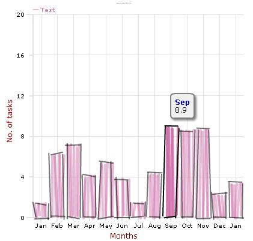
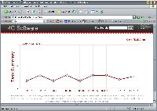
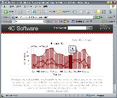
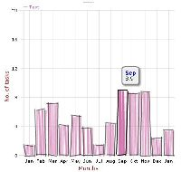

| Name | Connext Graph Plugin |
|---|---|
| Publisher | Mark Ashworth |
| License | Open Source (ASL2) |
| Version | 0.7 |
| Compatibility | Struts 2.0.2+ |
| Homepage | https://connext-graphs.dev.java.net |
| Download | https://connext-graphs.dev.java.net/servlets/ProjectDocumentList |
Overview
The Connext Graphs allows web applications to make use of the Open Flash Chart charts.
Features
- Struts 2 tag to embed the Open Flash Chart movie in the JSP page
- Provide a controller model to generate the data file that it used to control the chart
Changes
0.7 Release
- Fixed the chart title font and color problem
- Removed the link to the Open Flash Chart website
- Added Pie Chart support
- Linked in the Open Flash Chart 1.9.7 release
0.6 Release
- Added support for the sketch bar chart thanks to Oleh Lozynskyy.
- Linked in the Open Flash Chart 1.9.6 release
The following constructor is used to create the sketch bar chart
new OFCBarSketchSeriesType(55, 6, "#d070ac", "#000000", "Test", 10)
The following is complete snippet taken from the Connext-Graphs Demo web application that demonstrates the sketch bar chart
DefaultOFCGraphDataModel model = new DefaultOFCGraphDataModel(); model.setData(Arrays.asList(data01)); model.setFormat(new DecimalFormat("###0.000")); model.setSeriesType(new OFCBarSketchSeriesType(55, 6, "#d070ac", "#000000", "Test", 10)); controller.add(model);

0.5 Release
- Added support for the 3D bar chart
0.4 Release
- Added support for bar and bar_fill charts
Upcoming Features
0.5 Release
- Support for 3D bar charts
- Support for pie charts
0.5+ Release
- FreeMarker tags
- Velocity tags
Project
The project is accessible at https://connext-graphs.dev.java.net/
Example
- Add the connext-graph.jar to the WEb_INF/lib folder
- Include the taglib in your page
<%@ taglib prefix="m" uri="/connext" %>
- Insert the graph tag into your JSP page. In the example the data.txt file contains the controller logic for the graph. If you would a Struts 2 action to provide the controller logic then place it's fully qualified URL in the url property. Example, /contractor/Graph.action if the Graph action provides the logic.
<m:graph id="graph" width="800" height="300" align="middle" bgcolor="#FFFFFF" url="/Graph_example01.action" />
- Code the Graph action class. Below is an example of the example01 method
OFCGraphController controller = new OFCGraphController(); controller.getTitle().setText("Example 01"); controller.getTitle().setSize(12); controller.getLabels().setLabels(Arrays.asList(labels)); controller.getYLegend().setText("No. of tasks"); controller.getYLegend().setColor("#8b0000"); controller.getYLegend().setSize(12); controller.getXLegend().setText("Months"); controller.getXLegend().setColor("#8b0000"); controller.getXLegend().setSize(12); controller.getColor().getBgColor().setColor("#FFFFFF"); controller.getColor().getXAxisColor().setColor("#e3e3e3"); controller.getColor().getYAxisColor().setColor("#e3e3e3"); controller.getColor().getXGridColor().setColor("#e3e3e3"); controller.getColor().getYGridColor().setColor("#e3e3e3"); DefaultOFCGraphDataModel model = new DefaultOFCGraphDataModel(); model.setData(Arrays.asList(data01)); model.setFormat(new DecimalFormat("###0.000")); model.setSeriesType(new OFCLineHollowSeriesType(3, "#8b0000", "Test", 10, 6)); controller.add(model); model = new DefaultOFCGraphDataModel(); model.setData(Arrays.asList(data02)); model.setFormat(new DecimalFormat("###0.000")); model.setSeriesType(new OFCLineDotSeriesType(3, "#8b0000", "Test 2", 5, 6)); controller.add(model); model = new DefaultOFCGraphDataModel(); model.setData(Arrays.asList(data03)); model.setFormat(new DecimalFormat("###0.000")); model.setSeriesType(new OFCLineSeriesType(2, "#8b0000", "Example", 4)); controller.add(model); value = controller.render(); return SUCCESS;
- Code the graph.jsp page to output the Graph.value property
<%@ include file="include.jsp" %> <s:property value="value" escape="false" />
- Remember to put cache control off
response.setHeader("Cache-Control","no-cache"); //HTTP 1.1 response.setHeader("Pragma","no-cache"); //HTTP 1.0 response.setDateHeader ("Expires", 0); //prevents caching at the proxy server
| (view as slideshow) | ||||||
|---|---|---|---|---|---|---|
|  |  |  | ||||
| Sample web application with graph | Screenshot showing 0.4 bar charts | |||||
Resources
Version History
| Version | Date | Author | Notes |
|---|---|---|---|
| 0.1 | Jun 20, 2007 | Mark Ashworth | Initial release |
| 0.2 | Jun 23, 2007 | Mark Ashworth | Added the controller and line graph support |
| 0.3 | Aug 18, 2007 | Mark Ashworth | Resolved the issue with the Tomcat tagSupport.xml file |
| 0.4 | Aug 20, 2007 | Mark Ashworth | Added support for bar and filled bar charts |